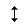
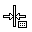
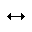
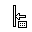
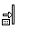
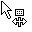
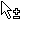
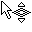
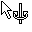

|
Mouse cursor |

  
|
|
Mouse cursor |
|
WinOLS uses the mouse cursor to display information about what can currently be done with a click of the left mouse button.
The following mouse cursors are used (apart from the default cursor).
Viewmode ’Text’:
 |
This cursor appears when you move the mouse over the double line of a hexdump (right of the address column). Click and drag to move the visible area vertically. |
 |
This cursor appears when you move the mouse over the single line of a hexdump (between the hexdump and the bars). Click and drag to change the number of columns. |
Viewmode’2d’:
 |
This cursor appears when you move the mouse over the lower scale. Click and drag to move the visible area horizontally. |
This cursor appears when you move the mouse over the right scale. Click and drag to move the visible area vertically. |
|
 |
This cursor appears when you move the mouse over the left end of a selection. Click and drag to move the beginning of a selection. |
 |
This cursor appears when you move the mouse over the right end of a selection. Click and drag to move the end of a selection. |
This cursor appears when you move the mouse over a rowmarker within a selection. Click and drag to change the number of columns. |
|
 |
This cursor appears when you move the mouse outside a rowmarker within a selection. Click and drag to move the start address (and thus the rowmakers). |
 |
This cursor appears when you move the mouse cursor directly over a 2d value that is either currently selected by the editing cursor or that is part of a selection. Click and drag to change the value / all selected values. You can disable this function in the configuration under "2d". |
Viewmode’3d’:
 |
This cursor appears when you move the mouse over the left or right edge of the floor grid. Click and drag to change the strength of the perspective. |
 |
This cursor appears when you move the mouse over the lower edge of the floor grid. Click and drag to rotate the view. |
This cursor appears either when you move the mouse cursor directly over a 3d value that is currently selected by the editing cursor or when you move the mouse cursor over a selection. Click and drag to change the value / all selected values. You can disable this function in the configuration under "3d". |